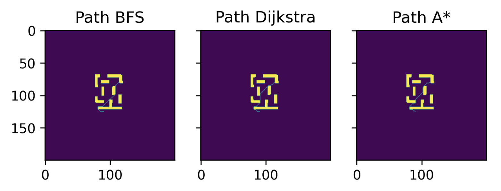

Path Planning using Graph Search Algorithms

The GMapping SLAM module on ROS was used to generate an environment map, which was then converted to a graph data structure. This was done by reading in the .pgm and .yaml files into Python, and then inflating the map with a rectangular kernel, followed by conversion to a graph. T he path planning problem was then solved from the map graph representation
Breadth First Search#
The breadth first search goes through the nodes in an unweighted graph and keeps a queue of the visited and unvisited nodes. For that, BFS checks the child nodes at every iteration and adds them to the queue, if a particular child node was already in the queue, it just skips to the next. At the end of the iteration, the parent node is marked as visited and it goes to the next entry in the queue. BFS took the least solving time to find the shortest path out of the three graph search algorithms
Elapsed Time: 0.263 s
Dijkstra’s Algorithm#
Dijkstra’s finds the shortest path between two points given a weighted graph. Unlike BFS, Dijkstra’s algorithm takes into consideration how difficult is to get from one node to another. Once we pass the graph and the start point to the algorithm it will build a data structure, where we can find the shortest path from the given start point to any other node in the graph (if they are connected). If we only require to find the path to one end point, then the algorithm can be shortened to break once that end point is found. Dijkstra’s algorithm took the most solver time out of the three algorithms
Elapsed Time: 175.135 s
A* Algorithm#
A* can be seen as an extension of Dijkstra, in that it introduces a heuristic function to provide more information to the search process. This allows for A* to have faster solving speeds than Dijkstra. The search queue in A* is prioritized based on a function containing a distance vector and a heuristic function that provides an idea of how “good” it is to move to a node, while searching for the path. This overall function is called the score function. A* was faster than Dijkstra, but slower than BFS.
Elapsed Time: 29.229 s